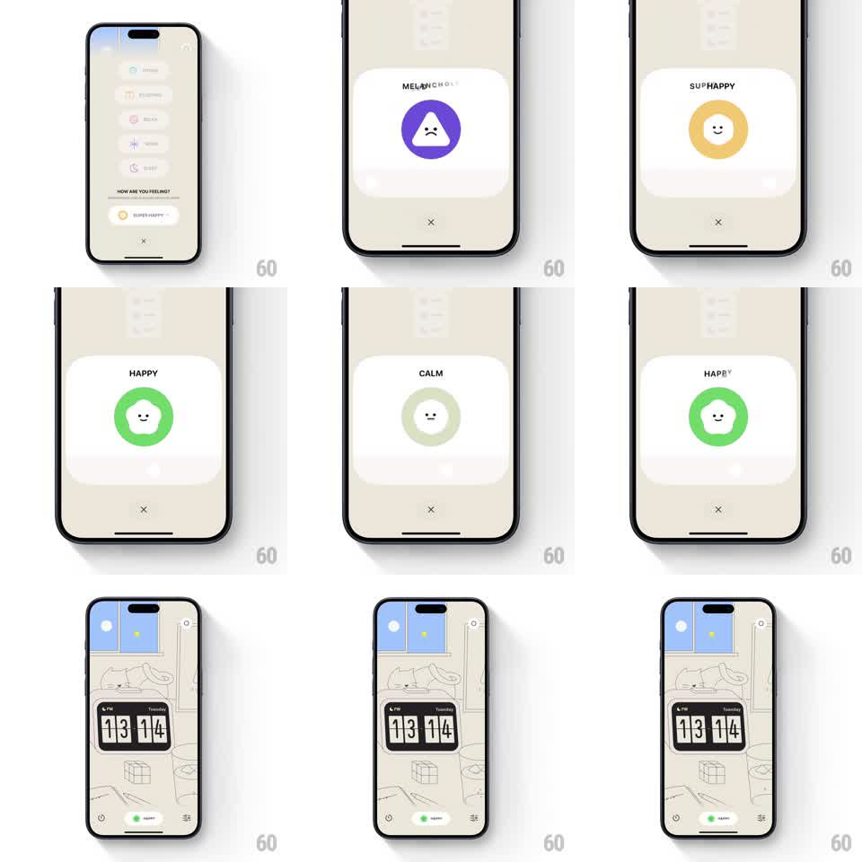

Media
Frame-by-frame

Rebuild this interaction 1:1: a mood-picker slider - dragging/scrubbing cycles through feelings (MELANCHOLY, SUP HAPPY, HAPPY, CALM) where a blob character morphs shape and color (purple triangle frown, yellow circle grin, green blob smile, pale calm dot) while the mood label swaps above it.

Rebuild this interaction 1:1: a mood-picker slider - dragging/scrubbing cycles through feelings (MELANCHOLY, SUP HAPPY, HAPPY, CALM) where a blob character morphs shape and color (purple triangle frown, yellow circle grin, green blob smile, pale calm dot) while the mood label swaps above it.
## Integration
Integration: stack-agnostic spec - springs given as stiffness/damping, timed motions as duration + curve; map every value to your framework and animation library of choice.
## Scene
Cream card over a dimmed list: mood label top ("MELANCHOLY"), a big shape character center (colored blob with a minimal face), an X close button below. Home screen after picking: illustrated room with flip clock "13 14" and a "HAPPY" status pill.
## Motion spec
Pattern: scrub-morphing shape character.
- Scrub: mood index maps linearly to slider position; the character's shape interpolates continuously (triangle -> circle -> blob) with path morphing, color crossfading between mood hues (~200ms).
- Face: eyes/mouth morph too (frown arc -> grin) - the expression is part of the shape, not a swapped image.
- Label: outgoing mood word slides up + fades as the new word rises in (~200ms), letter-spaced uppercase.
- On release: character settles with a squash-and-stretch bounce (scaleX 1.08/scaleY 0.92 -> 1, spring ~300/18, ~300ms).
- Pick commits: card fades, home screen's status pill updates to the chosen mood.
## Calibration
- Morphs are continuous with the slider - half-scrubbed states are valid in-between creatures.
- The bounce happens only on release, not during scrub.
## Reduced motion
Character crossfades between the four shapes.
## Don't miss
- Each mood is shape + color + face together; changing only color is wrong.
- Label typography stays in the same slot - no layout jump between long/short words.